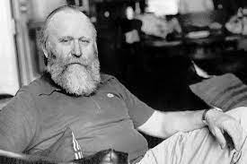

Nacio en Tacoma, 8 de octubre de 1920,
fallece en Madison, 11 de febrero de 1986
fue un periodista, ecólogo y, ante todo, novelista estadounidense.
Maestro de la ciencia-ficción en su vertiente más épica,
su fama se funda en creación del vasto universo
ficticio de Dune, considerada una de las obras
maestras del género.
Herbert nació en una familia humilde y tuvo
una relación conflictiva con sus padres, marcada
por la dura experiencia de la Gran Depresión. No
obstante, fue un precoz aficionado a la lectura y
a la fotografía. A los diecisiete años, se fue a
vivir con sus tíos, que residían en Salem, Oregon,
donde completó sus estudios.
Poco después, empezó
a trabajar como fotógrafo en algunos periódicos locales.
Al estallar la Segunda Guerra Mundial, se alistó en la
Marina. En 1941 se casó con Flora Lillian Pakirson en
San Pedro, California, que dio a luz a su hija,
Penelope, pero dos años más tarde se divorciaron de
mutuo acuerdo. Una vez finalizada la guerra, regresó
a Oregon, donde volvió a dedicarse al periodismo.
También se inscribió en la Universidad de Wathington
en un curso de Escritura Creativa. Allí conoció a
Beverly Ann Stuart, otra estudiante con ambiciones
literarias. Se casaron en 1946, y tendrían dos hijos:
Brian Patrick Herbert y Bruce Calvin Herbert.
En 1949, Herbert y su familia se mudaron a California.
En esa época, mientras trabajaba como editor para
el San Francisco Examiner, comenzó a involucrarse
en los ambientes de la naciente contracultura y
leyó a pensadores que le influyeron como Freud,
Jung y Heidegger. También se interesó por el
budismo zen. Sus primeros cuentos y novelas se
publicaron por aquel entonces con cierto eco
crítico, pero sin ningún éxito de público.

En 1957, Herbert viajó a Florence,
Oregon para escribir un reportaje.
La autopista 1 (Highway 1) se veía
frecuentemente bloqueada por los
vientos que venían desde un cercano
terreno desértico. Se había planeado
un proyecto para reforestar la región,
para que la vegetación bloqueara el
avance de las dunas. La idea de
poder manipular por parte del hombre
ciertas fuerzas naturales sembró una
gran curiosidad en Herbert, así que
empezó una extensa investigación
sobre el comportamiento de los
desiertos. Esta fue la semilla
para su obra más destacada, Dune.
Cruz Enriquez Bruno 4IV7